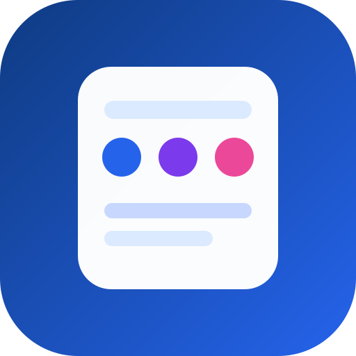

✓ Güvenli web uygulaması
SosyalPaket
Çözüm Merkezi · Pazarlama ve içerik planlama
KurulumTarayıcı / işletim sistemi onayı
Dosya tipiAPK indirme yok
BağlantıHTTPS üzerinden
Kurulum güvenliği: Cihazınıza bilinmeyen APK, EXE veya DMG dosyası indirilmez. Desteklenen cihazlarda kurulum, tarayıcının kendi resmi sistem penceresiyle tamamlanır.
Cihazınızı seçin
Cihaz otomatik algılanır; isterseniz başka bir platformu seçebilirsiniz.